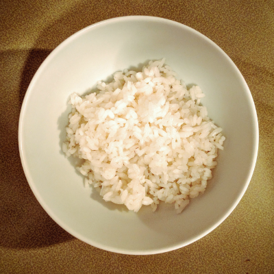

Roberto Cases's Recipes

White Rice
Kitchenware:
- Caldero or pot with a heavy lid that seals well
- Stove
Ingredients:
| Bacon | ½ strip |
| Olive Oil | 1 tablespoon |
| Salt | 1 teaspoon |
| Medium Grain Rice | 1 cup |
| Water | 1 & ½ cups |
Set the caldero/pot to medium heat on the stove. Cook the bacon until the it is starting to get crispy.You don't want it burnt.
Add the salt, rice, and water; and set the stove to high to boil uncovered. Don't stir the rice too much as stirring too much can cause the rice to be mushier than you would like.
Once boiling, watch for the water to evaporate from the caldero until it's almost the same level as the rice.
As soon as the water is at that level, cover the caldero with the lid and set the stove to low. Set your timer for 25 minutes.
After 25 minutes, uncover and fluff with fork. All the water should have been absorbed by the rice. If not, recover and check on it every ten minutes or so.
Good job, now lets make some beans to go with that rice!